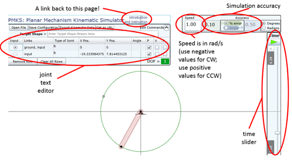

PMKS returns quick and accurate results for the position, velocity, and acceleration of rigid bodies connected as planar mechanisms.
This project is maintained by DesignEngrLab
PMKS returns quick and accurate results for the position, velocity, and acceleration of rigid bodies connected as planar mechanisms. The PMKS term refers to a calculator - a compiled dynamic library (e.g. .dll) which performs the necessary math operations to create values for the state variables of a mechanism's movement. This calculator can be accessed: 1) through an Excel macro, 2) through .NET programs, or 3) from an online graphical user-interface written in Silverlight (which is deemed PMKS_Web, but for simplicity we refer to if by the same name, PMKS). This can always be found at the Persistent URL...
The usefulness in PMKS_Web comes in the abilitiy to quickly draft and analyze mechanisms. Unlike commercial tools, PMKS is pure kinematics, which is a good thing in that you do not need to specify masses, or stiffnesses. We have shown in technical papers that the approach is quicker and more accurate than other approaches. Furthermore, a novel approach to analyzing non-dyadic mechanisms has been developed which gives unprecedented results (see examples in rightmost column of examples table).
The implementation is lightweight and runs completely within the browser as a Silverlight application. You can download two small files and run it locally: the webpage (pmks.html), and the binary file (PMKS.xap).
Here are some of the mechanisms created to date.
|
sun
driven planetary |
||
|
|
PMKS_Web has been designed to allow for one to quickly simulate and visualize planar mechanism. As such it makes certain simplifications or predictions to quicken the drafting process. When the main page is opened, you will see a single pendulum moving counter-clockwise at the center of the screen, like in the following screenshot.

Figure
1: A description of the main elements of the PMKS page.
Let us consider the various components of this page. Under the title and link back to this page (listed as “introduction and instructionsâ€), you will find the joint-editing table surrounded by a series of buttons. In PMKS_Web, mechanisms are explicitly and completely defined by joints – the definition of links is done implicitly. Once a joint is fully specified as a new row in the table, it will appear in the main window. From the main window, the coordinates can be manipulated by clicking and dragging on the purple (for translation) or pink (for rotation) arrows (see below). Note: you do not have to catch the moving link! You manipulate the unfilled icon that appears at the initial location.
This last point is quite crucial: Mechanisms are defined by the starting locations of the joints (at t = 0). This means that you could make the same mechanism many different ways.
Ready to learn more? Check out these tutorials:
· Tutorial 1: Creating a Four-Bar
· Tutorial 2: Creating a Crank-and-Slider
· Tutorial 3: Additional Capabilities (n-Bar, Target Shapes, & Outputting Data)
Copyright ©2014 Matthew I. Campbell, Oregon State University Disclaimer